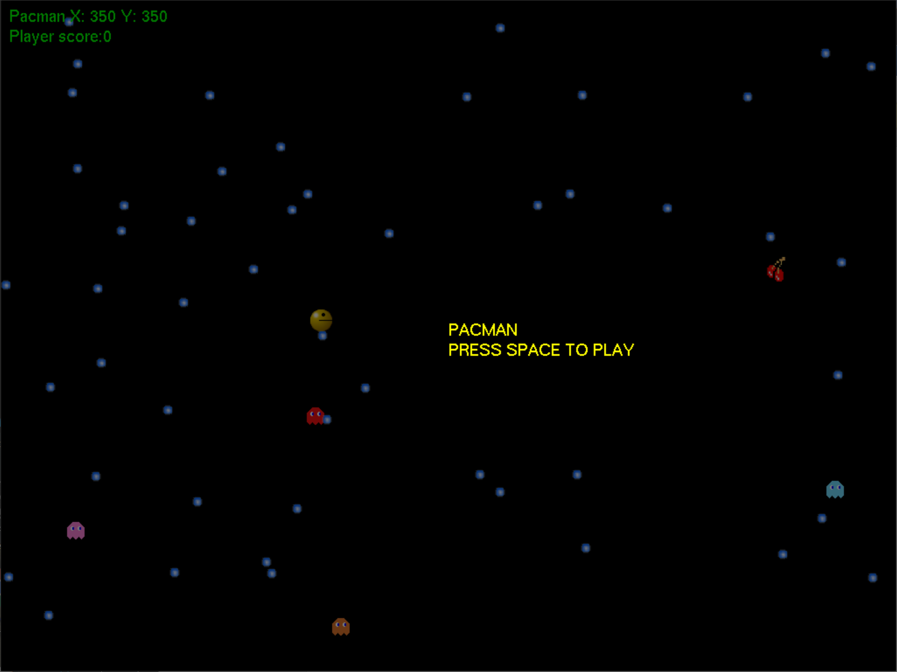
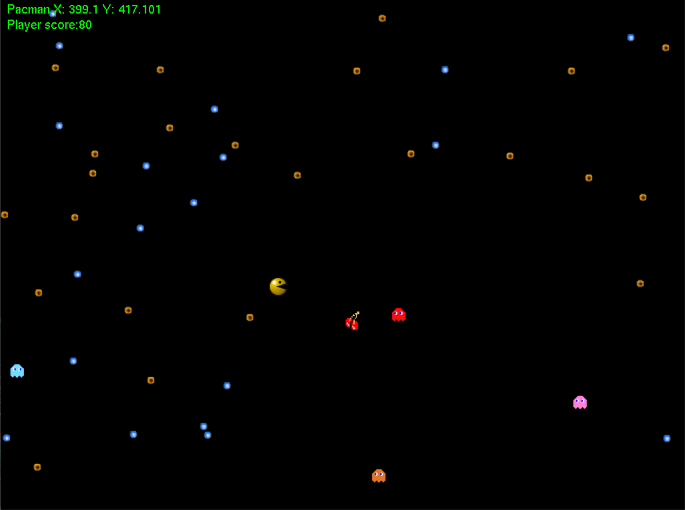

Pacman Project
Pacman is a project that I did at university using a framework called S2D. S2D is Stffordshire Universtys framework and it was created by Paul Boocock.Pacman was also a project that was done using C++ for a module called "Fundamentals of Game and Graphical System Development".
 